🧩 MCP(Magic Cursor Protocol) 가이드
Cursor AI의 외부 데이터 연동 & Figma MCP 실전 설치법
✅ MCP란?
MCP (Magic Cursor Protocol)Cursor AI에 외부 데이터(예: Figma 시안, 콘솔 오류 등)를 연결해 AI 정확도와 이해도를 높여주는 확장 프로토콜
🧩 MCP의 중요성
- 일반 AI는 코드 외 정보는 인식 불가 →
- MCP 사용 시 디자인 시안 기반 마크업, 오류 분석, 프로젝트 구조 인식 가능
⚙️ 추천 MCP 종류
| MCP 이름 | 기능 요약 |
|---|---|
| Figma Plugin MCP | Figma 시안 → 코드 생성 가능 |
| Browser Tools MCP | 브라우저 오류 전달 → 디버깅 지원 |
| Project Context MCP | 디렉토리/스타일 가이드 기억 |
| Sequential Thinking MCP | 단계적 사고 유도 |
�� Figma Plugin MCP 설치 방법 (Windows 기준)
-
폴더 생성: 바탕화면에 cursor-plugin 폴더 생성
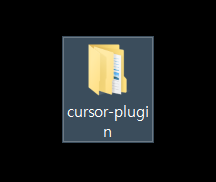
-
해당 플러그인 깃 다운로드:
https://github.com/sonnylazuardi/cursor-talk-to-figma-mcp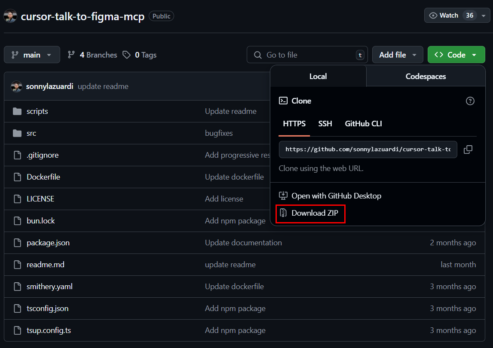 -
PowerShell 열기 → 해당 폴더로 이동
cd C:\Users\ELUO\Desktop\cursor-plugin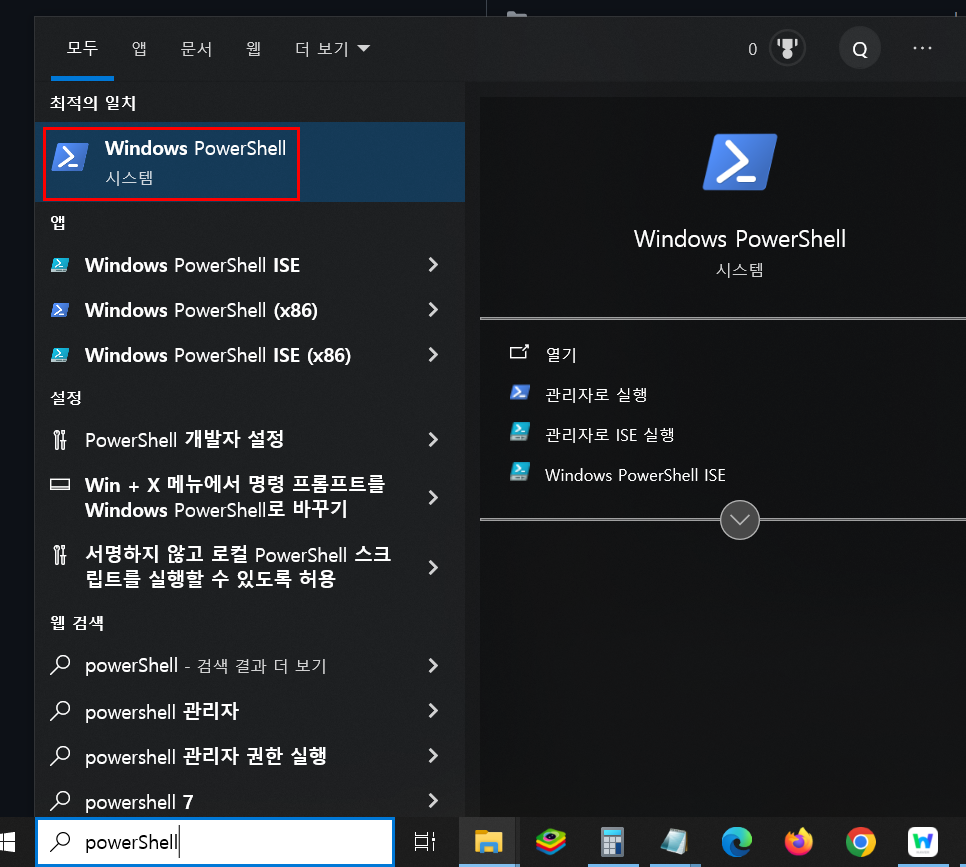 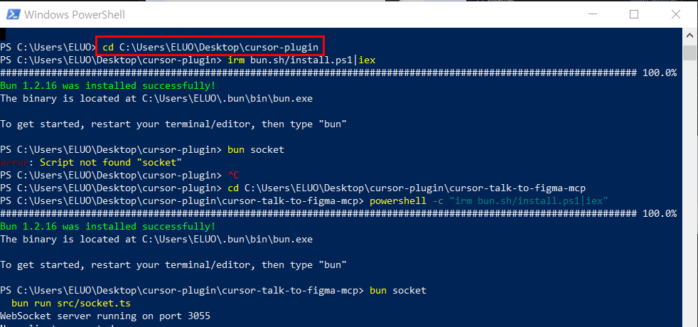 - Bun 설치
irm bun.sh/install.ps1 | iex
- src/socket.ts 파일에서
hostname: "0.0.0.0" 주석 해제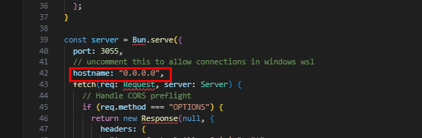 - 서버 실행
(* 서버 실행이 안되어 있을 경우 mcp 연결이 안됩니다.)bun socket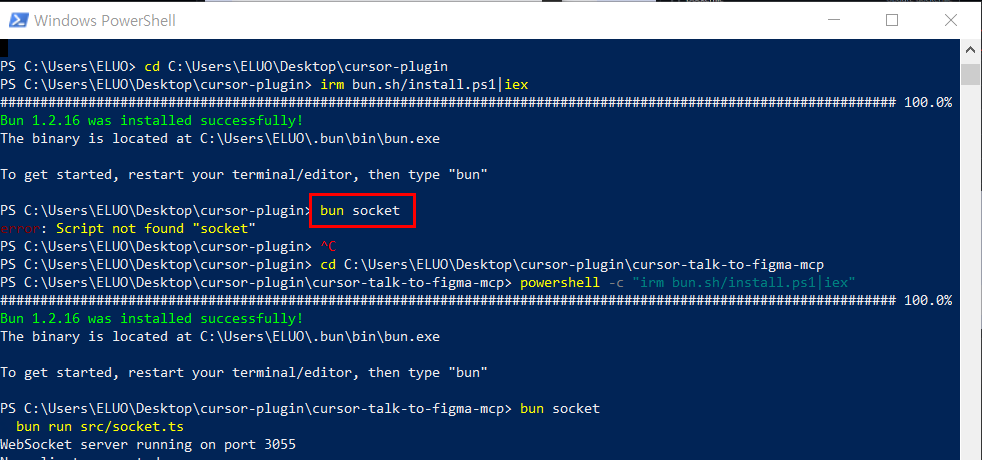 - Cursor 설정 파일 추가 (~/.cursor/mcp.json)
{ "mcpServers": { "TalkToFigma": { "command": "bunx", "args": ["cursor-talk-to-figma-mcp@latest"] } } }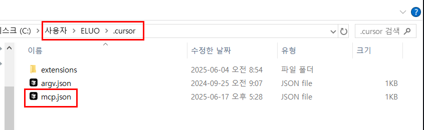 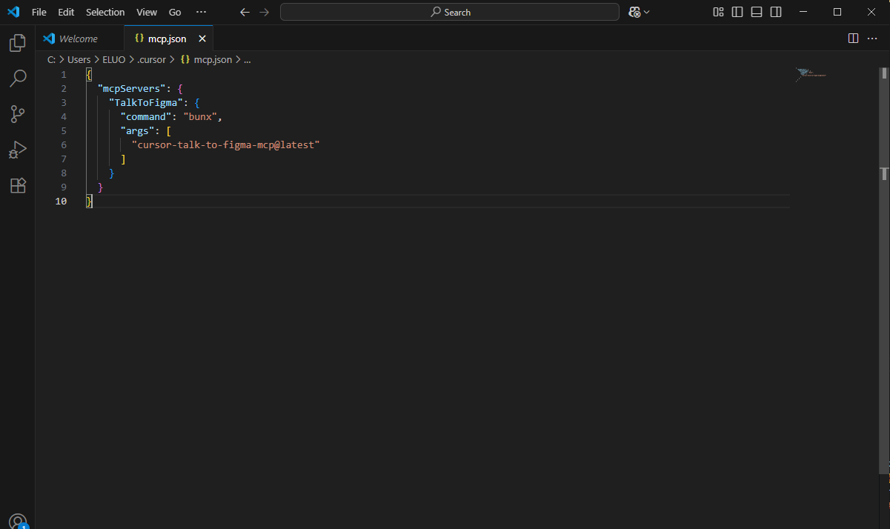 -
피그마앱 접속
(* web 피그마 링크 말고 피그마 파일을 다운로드 및 실행 필요
https://www.figma.com/ko-kr/downloads/)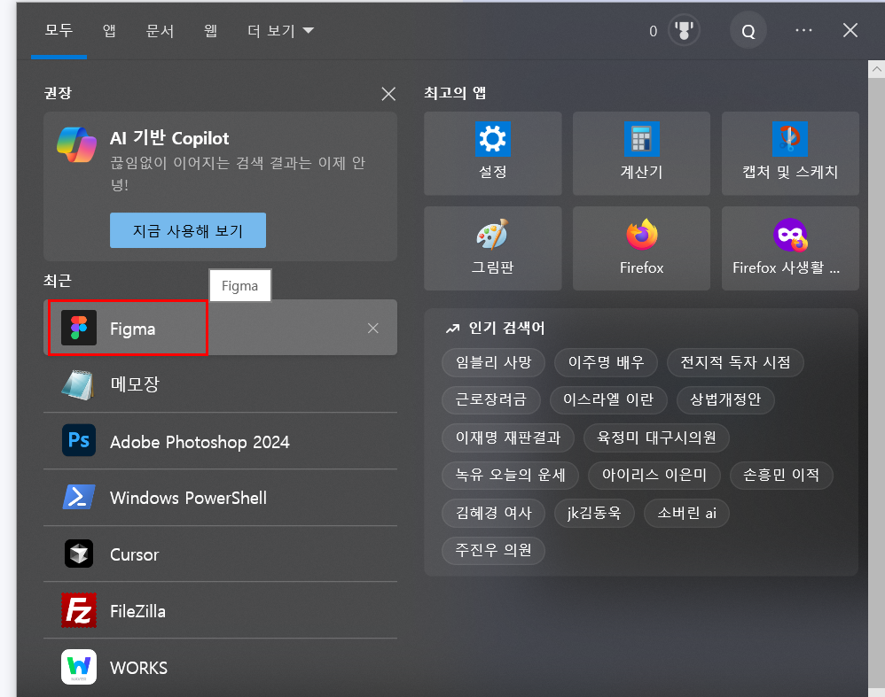 -
피그마 MCP 적용할 프로젝트 열기
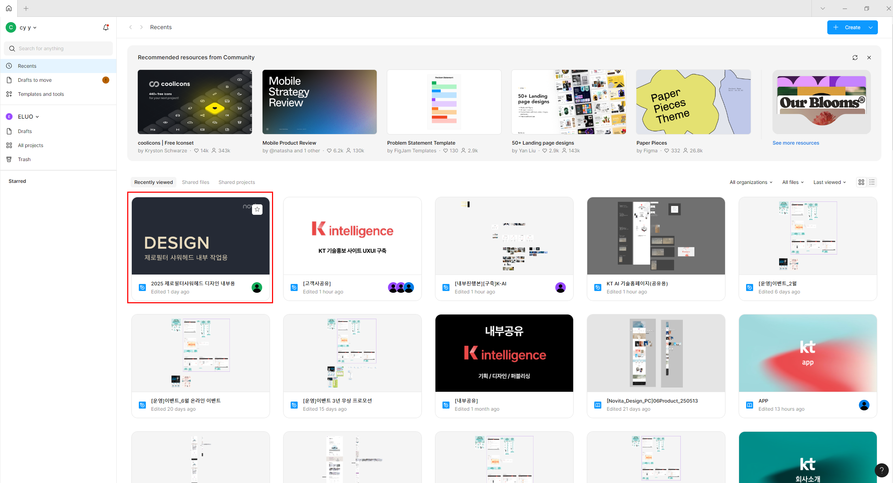
-
상단 메뉴바 클릭 후 "플러그인 메뉴" 접속
(* 플러그인 메뉴가 뜨지 않을 경우 권한 관련 설정 필요)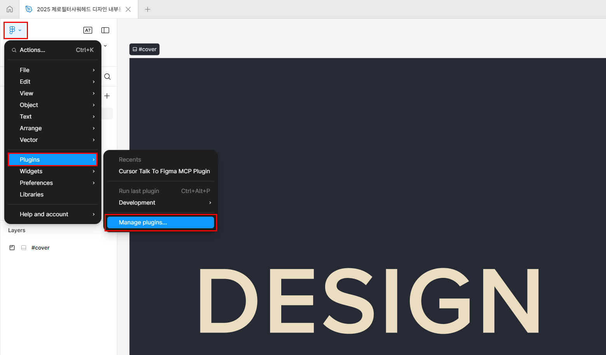 -
플러그인 검색창에 "cursor talk to figma" 검색 후 클릭
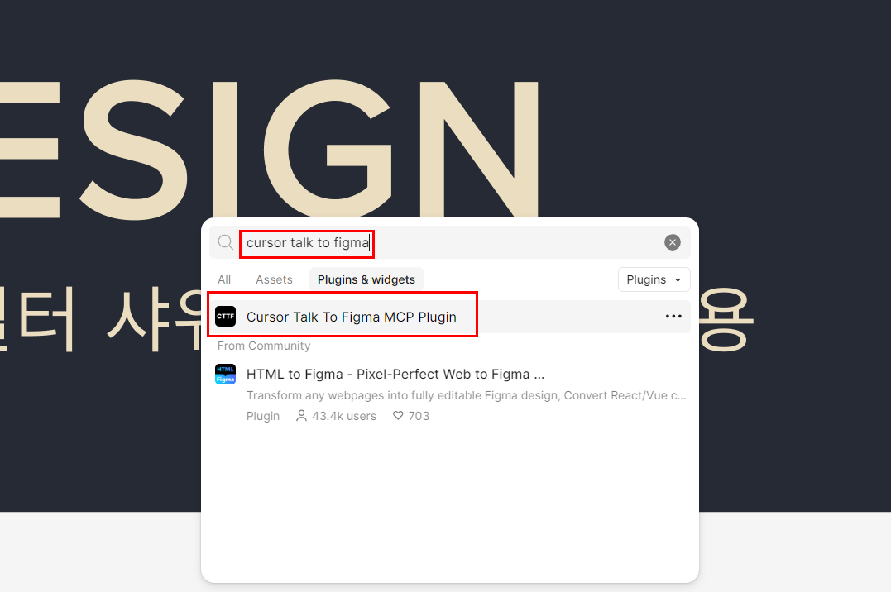
-
TalkToFigma 플러그인창의 Use localhost connect 클릭 후 채널코드 복사
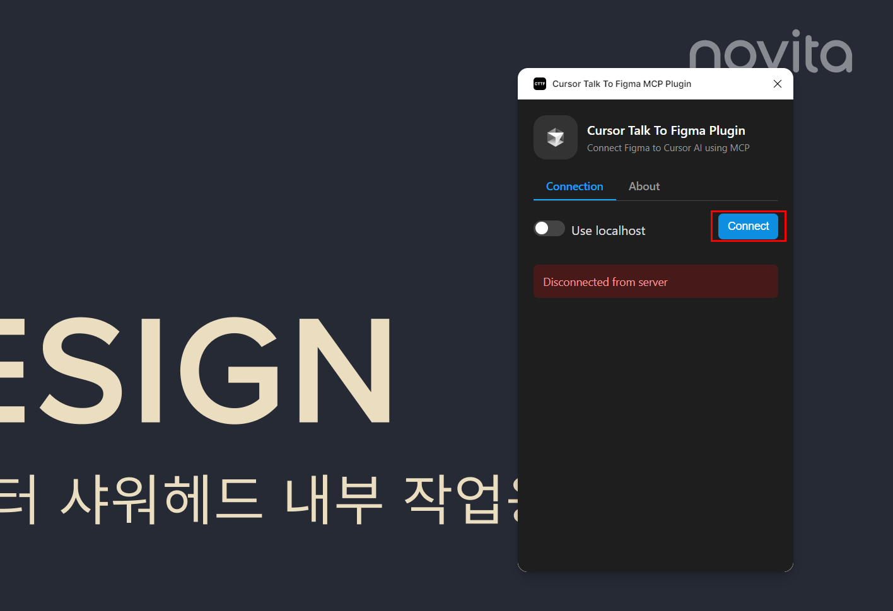 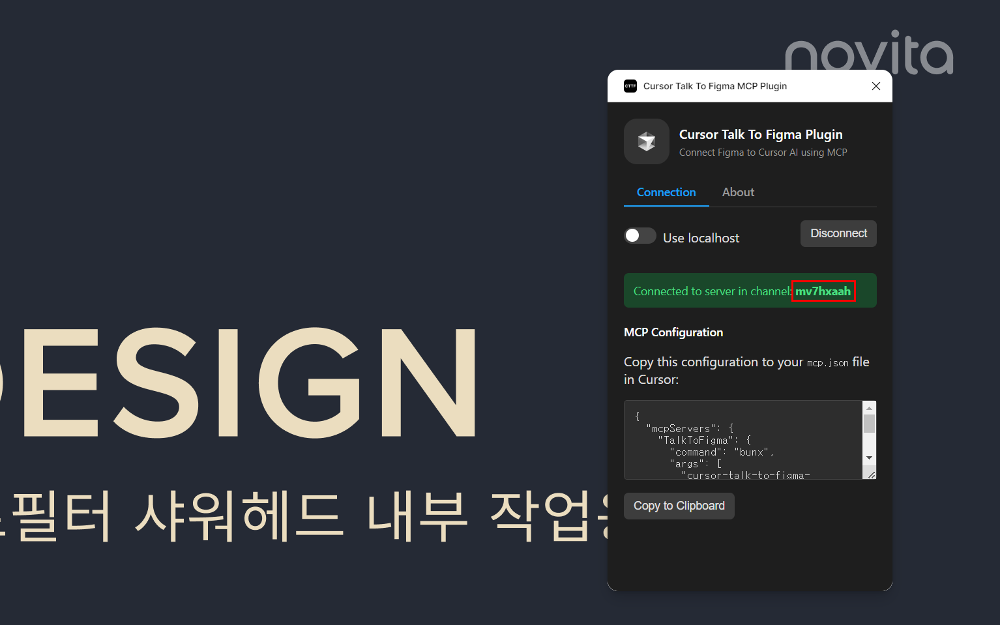
-
실행된 커서 창에 [Ctrl + i] Ask AI 창 열고
아래처럼 명령어 실행피그마 채널 연결해줘 채널 코드 : (복사한 채널 코드 붙여넣기)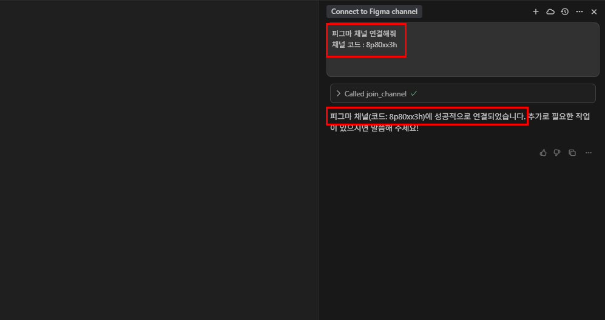
🔎 Figma talk to figma 활용 방법
🔗 Figma 사용 권한 설정
| 항목 | 필요 조건 |
|---|---|
| API 접근 | Personal Access Token 발급 (Figma > Profile > Settings) |
| 파일 권한 | 최소 "Anyone with the link → Can View" |
| 사용자 권한 | 최소 Editor 권한 필요 |
| 조직 계정 | 관리자 설정에서 외부 API 허용 필요 |